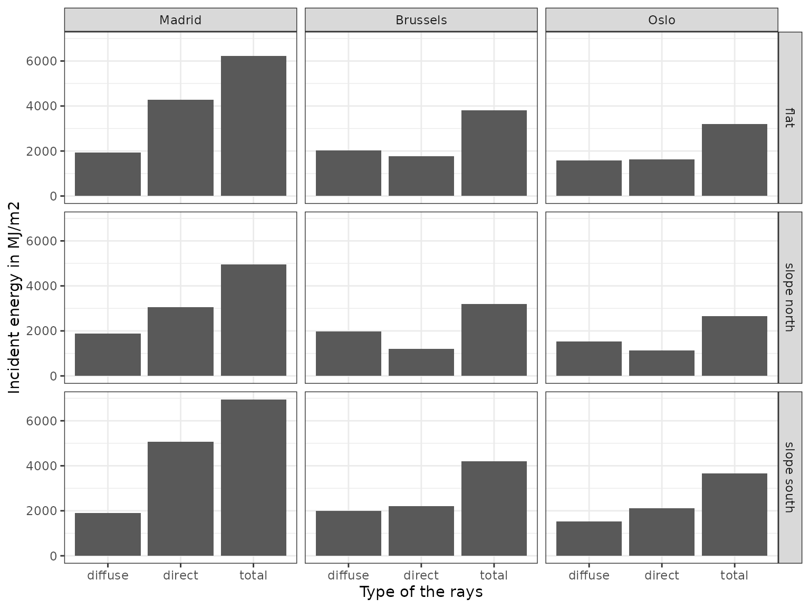
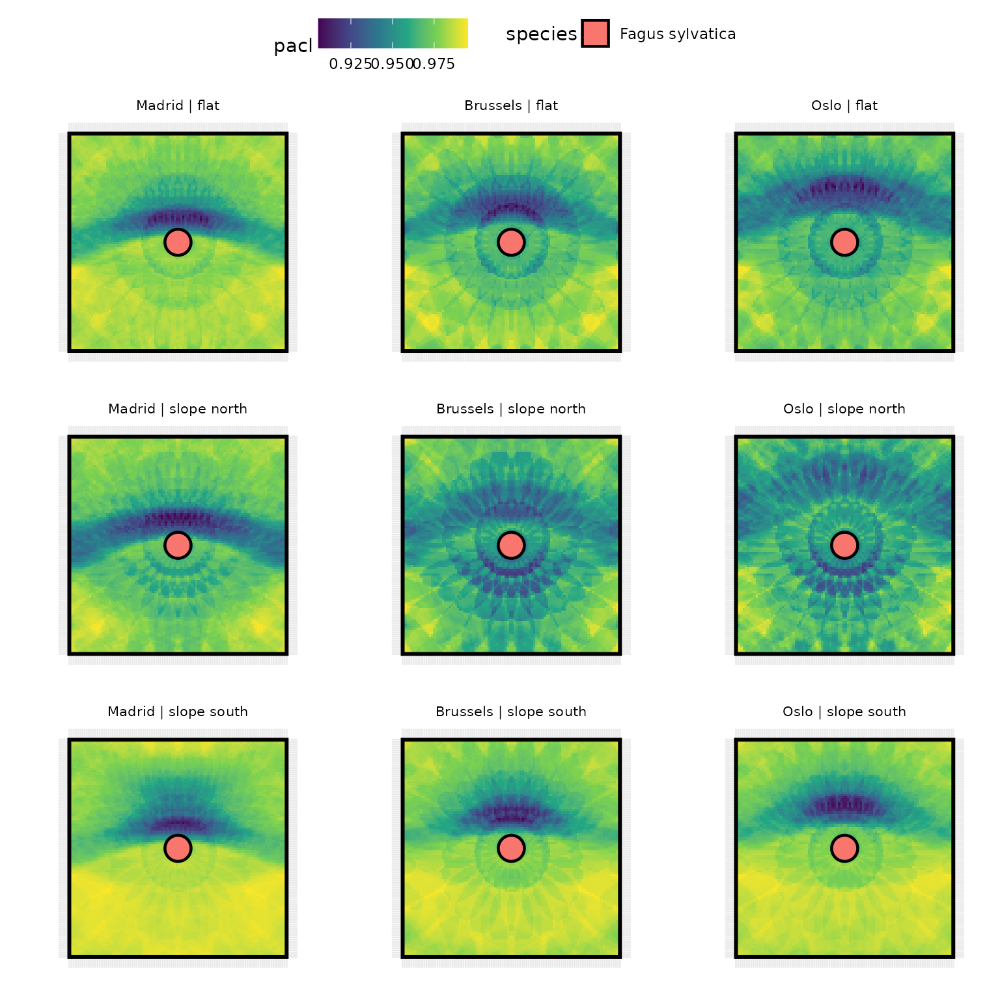

2 - Understand stand information
Understand the effect of the stand latitude, slope and aspect
2-stand_geometry.RmdThis is a tutorial which shows the effect of stand geometry on light distribution by showing the shading effect of a single large tree depending on the latitude and the slope/aspect of the stand. This tutorial also allows to address how the SamsaraLight model discretizes the direct and diffuse rays.
Run the experiment
Create virtual stands
In this tutorial, we will create from scratch a virtual stand with a single large tree at the center.
# Stand dimensions
cell_size <- 1
stand_size_x <- 100
stand_size_y <- 100
# Variable needed for creating the trees table
names(SamsaRaLight::data_prenovel$trees)
#> [1] "id_tree" "species" "x" "y"
#> [5] "dbh_cm" "crown_type" "h_m" "hbase_m"
#> [9] "hmax_m" "rn_m" "re_m" "rs_m"
#> [13] "rw_m" "crown_openess" "crown_lad"
# Creating the table for this experiment (i.e. one big tree on the middle of the stand)
data_tree <- data.frame(
id_tree = 1,
species = "Fagus sylvatica",
x = stand_size_x / 2,
y = stand_size_y / 2,
dbh_cm = 100,
crown_type = "E",
h_m = 40,
hbase_m = 20,
hmax_m = NA,
rn_m = 6,
re_m = 6,
rs_m = 6,
rw_m = 6,
crown_openess = 0.2,
crown_lad = 1
)
data_tree
#> id_tree species x y dbh_cm crown_type h_m hbase_m hmax_m rn_m re_m
#> 1 1 Fagus sylvatica 50 50 100 E 40 20 NA 6 6
#> rs_m rw_m crown_openess crown_lad
#> 1 6 6 0.2 1Define the experimental design
Here, we define the experimental design, that is the latitude/slope/aspect combinations we want to test.
exp_design <- expand.grid(
city = c("Madrid", "Brussels", "Oslo"), # Define three towns with different latitudes in Europe
slope = c(0, 20),
aspect = c(0, 180)
) %>%
# Set the longitude/latitude of our three towns
dplyr::mutate(
latitude = case_match(city,
"Madrid" ~ 40.4167,
"Brussels" ~ 50.8477,
"Oslo" ~ 59.9122),
longitude = case_match(city,
"Madrid" ~ -3.7033,
"Brussels" ~ 4.3572,
"Oslo" ~ 10.7313)
) %>%
dplyr::filter(!(slope == 0 & aspect != 0)) %>% # Because aspect do not change anything in a flat plane
dplyr::mutate(stand_geom = case_when(
slope == 0 ~ "flat",
slope > 0 & aspect == 0 ~ "slope north",
slope > 0 & aspect == 180 ~ "slope south"),
mod_id = row_number()) %>%
dplyr::relocate(mod_id)
exp_design
#> mod_id city slope aspect latitude longitude stand_geom
#> 1 1 Madrid 0 0 40.4167 -3.7033 flat
#> 2 2 Brussels 0 0 50.8477 4.3572 flat
#> 3 3 Oslo 0 0 59.9122 10.7313 flat
#> 4 4 Madrid 20 0 40.4167 -3.7033 slope north
#> 5 5 Brussels 20 0 50.8477 4.3572 slope north
#> 6 6 Oslo 20 0 59.9122 10.7313 slope north
#> 7 7 Madrid 20 180 40.4167 -3.7033 slope south
#> 8 8 Brussels 20 180 50.8477 4.3572 slope south
#> 9 9 Oslo 20 180 59.9122 10.7313 slope southRun SamsaraLight for each virtual stand
# Store SamsaraLight outputs in a list
out_sl <- vector("list", nrow(exp_design))
for (i in 1:nrow(exp_design)) {
mod_design <- exp_design[i,]
# Get the radiation from PVGIS database
tmp_rad <- SamsaRaLight::get_monthly_rad(mod_design$latitude, mod_design$longitude)
# Run SamsaraLight
out_sl[[i]] <- SamsaRaLight::sl_run(
trees = data_tree,
monthly_rad = tmp_rad,
cell_size = cell_size,
n_cells_x = stand_size_x / cell_size,
n_cells_y = stand_size_y / cell_size,
latitude = mod_design$latitude,
slope = mod_design$slope,
aspect = mod_design$aspect
)
}Observe the outputs
Understand the discretisation of direct and diffuse rays
The discretisation of the rays are given in the
$monthly_rays$rays of the sl_run() function
output, with the total energy (in
)
given in $monthly_rays$energies for both direct and diffuse
radiations, either on a horizontal flat plane or in the slope. The basic
output variables use the direct and diffuse energies on the slope, but
the horizontal energies are needed in the case of using virtual sensors
(see Tutorial 7 - Estimate light on virtual sensors).
The direct rays (direct = TRUE) are created following the trajectory
of the sun across the year, that depends on the stand latitude and the
diffuse rays (direct = FALSE) are discretized by creating rays that are
coming from all the directions across the sky. The direction of a ray is
defined by its azimut, and the orientation by the height_angle column,
both in radians. The incident energies of direct and diffuse rays (in
)
are estimated from the monthly global energy and diffuse to global
ratio, created above from the function
SamsaRaLight::get_monthly_rad().
out_sl[[4]]$monthly_rays$energies
#> slope_direct slope_diffuse horizontal_direct horizontal_diffuse
#> 3052.300 1893.455 4289.146 1941.553
head(out_sl[[4]]$monthly_rays$rays)
#> id_ray azimut height_angle e_incident direct
#> 1 1 5.478378 0.4405345 17.30552 TRUE
#> 2 2 5.396980 0.4846145 17.30567 TRUE
#> 3 3 5.310983 0.5243855 17.30579 TRUE
#> 4 4 5.220347 0.5593080 17.30588 TRUE
#> 5 5 5.125242 0.5888384 17.30594 TRUE
#> 6 6 5.026082 0.6124568 17.30599 TRUEChange in incident energy with stand latitude and geometry
# Create a dataframe for comparing incident energies
out_sl %>%
purrr::map(~as.data.frame(as.list(.x$monthly_rays$energies))) %>%
dplyr::bind_rows(.id = "mod_id") %>%
dplyr::mutate(mod_id = as.integer(mod_id),
horizontal_total = horizontal_direct + horizontal_diffuse,
slope_total = slope_direct + slope_diffuse) %>%
tidyr::pivot_longer(!mod_id,
names_pattern = "(.*)_(.*)",
names_to = c("surface", "type"),
values_to = "energy") %>%
dplyr::left_join(exp_design, by = "mod_id") %>%
dplyr::filter(surface == "slope") %>%
# Plot the graphic
ggplot(aes(y = energy, x = type)) +
geom_col() +
facet_grid(cols = vars(city), rows = vars(stand_geom)) +
theme_bw() +
ylab("Incident energy in MJ/m2") +
xlab("Type of the rays")
Plot the SamsaraLight outputs
# Store plots in a list
plot_list <- vector("list", nrow(exp_design))
legend <- NULL
for (i in 1:nrow(exp_design)) {
mod_design <- exp_design[i,]
# Plot the stand with light outputs
tmp_sl_plot <- SamsaRaLight::plot_sl_output(out_sl[[i]],
trees.fill = "species",
cells.fill = "pacl",
cells.fill.palette = "viridis")
# Change some ggplot2 features
tmp_sl_plot <- tmp_sl_plot +
labs(subtitle = paste(mod_design$city,
"|", mod_design$stand_geom)) +
theme(legend.position = "top",
axis.text = element_blank(),
plot.subtitle = element_text(size = 8, hjust = 0.5)) +
scale_color_continuous(limits = c(0.9, 1))
# Fetch the legend if it is not already done
# And remove the plot legend after that
if (is.null(legend)) {
legend <- cowplot::get_legend(tmp_sl_plot)
}
tmp_sl_plot <- tmp_sl_plot + theme(legend.position = "none")
# Add the plot to the list
plot_list[[i]] <- tmp_sl_plot
}
# Gather all the plots using the cowplot package
cowplot::plot_grid(
legend,
cowplot::plot_grid(plotlist = plot_list,
nrow = 3, ncol = 3),
rel_heights = c(1, 10),
ncol = 1
)